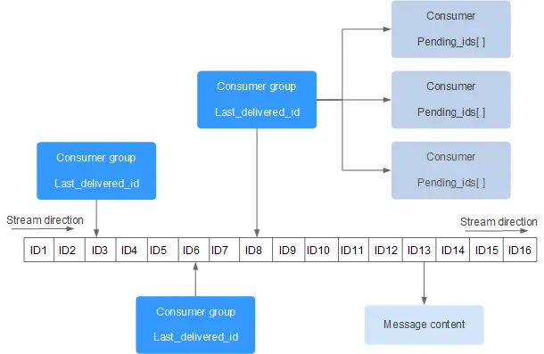
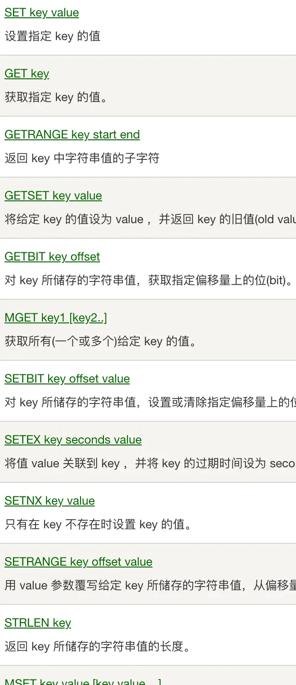
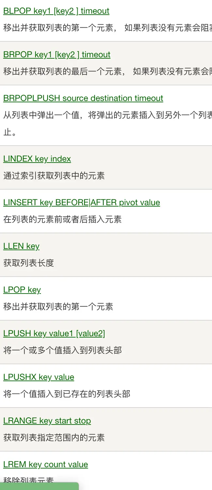
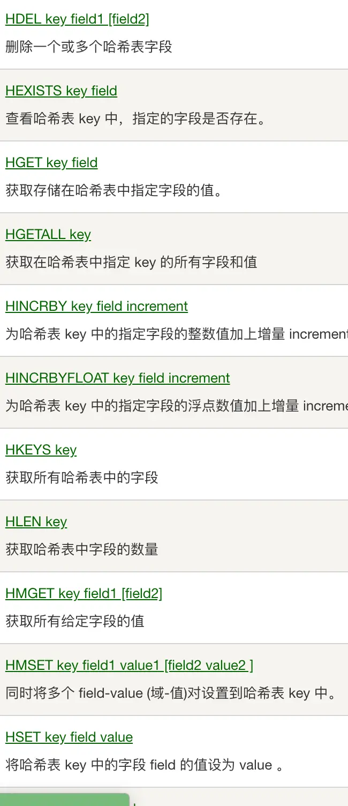
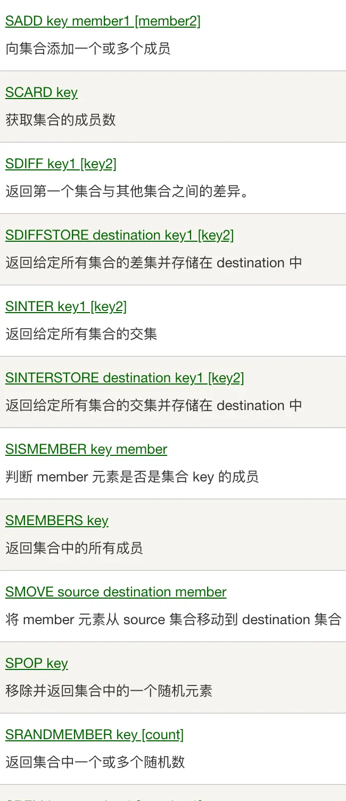
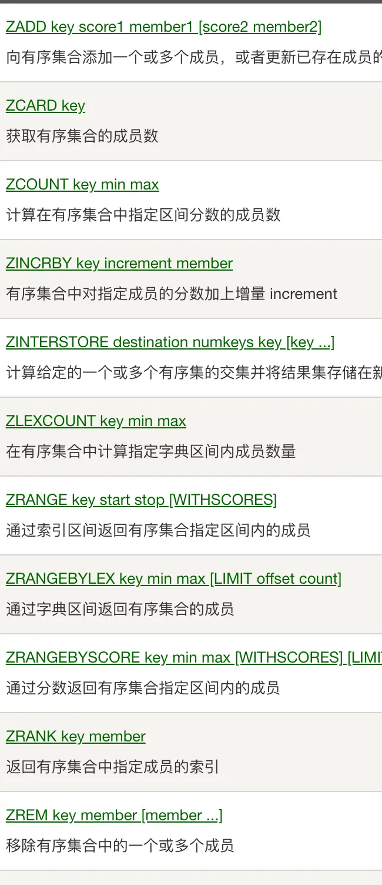
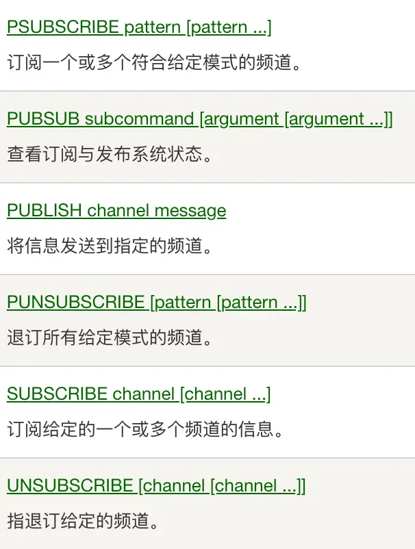
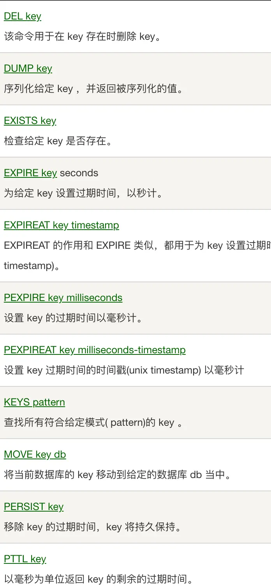
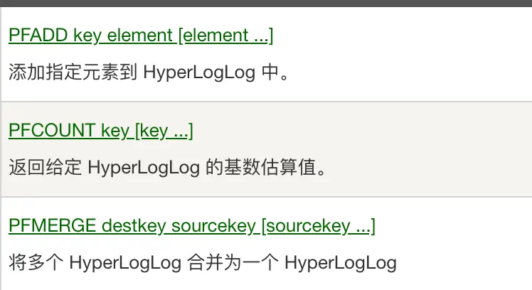

Redis
Redis（Remote Dictionary Server）是内存键值存储兼数据结构服务器，长于缓存、消息队列、实时计数、会话存储等场景。本文是长期维护的实操笔记：正文记录基础安装、各版本演进与常用命令，文末更新节汇总 2025-2026 年 Redis 8 系列现状。
安装运行
brew install redis
brew services start rediswget https://download.redis.io/redis-stable.tar.gz
tar -xzvf redis-stable.tar.gz
cd redis-stable
make
# If the compile succeeds, you'll find several Redis binaries in the src directory, including:
# redis-server: the Redis Server itself
# redis-cli is the command line interface utility to talk with Redis.
# To install these binaries in /usr/local/bin, run:
make install自带客户端
#Usage: redis-cli [OPTIONS] [cmd [arg [arg ...]]]
#Examples:
# cat /etc/passwd | redis-cli -x set mypasswd
# redis-cli get mypasswd
# redis-cli -r 100 lpush mylist x
# redis-cli -r 100 -i 1 info | grep used_memory_human:
# redis-cli --quoted-input set '"null-\x00-separated"' value
# redis-cli --eval myscript.lua key1 key2 , arg1 arg2 arg3
# redis-cli --scan --pattern '*:12345*'
#When no command is given, redis-cli starts in interactive mode
#redis-cli的命令提示非常有帮助,比其他终端好用的多
redis-cli常用姿势：-x 管道吃 stdin、-r 重复执行（配 -i 间隔）、--scan 做不阻塞的全量遍历；tab 补全比多数终端客户端好用。
RedisInsight：官方可视化工具
v3.x 提供 Browser、Workbench、Profiler、Slow Log 与 Memory Analysis，排查线上问题比裸 redis-cli 高效得多。
redis4引入自动内存碎片整理
# 开启自动内存碎片整理(总开关),默认no
activedefrag yes
# 当碎片达到 100mb 时，开启内存碎片整理
active-defrag-ignore-bytes 100mb
# 当碎片超过 10% 时，开启内存碎片整理
active-defrag-threshold-lower 10
# 内存碎片超过 100%，则尽最大努力整理
active-defrag-threshold-upper 100
# 内存自动整理占用资源最小百分比
active-defrag-cycle-min 1
# 内存自动整理占用资源最大百分比
active-defrag-cycle-max 254.0 引入、8.x 沿用。是否开启先看 INFO memory 的 mem_fragmentation_ratio：持续高于 1.4 且内存紧张再开；大 Key 删除优先用 UNLINK 异步释放。
Notice:开启后,可能特定时间影响redis响应速度
redis5带来了Stream
Redis对消息队列（MQ，Message Queue）的完善实现。注意：Pub/Sub 广播即焚、消息不落地；Stream 消息持久化保存，消费组内竞争、组间广播，配合
XACK可做到"至少一次"可靠消费。需要消息不丢用 Stream，纯事件通知用 Pub/Sub。
redis6增加了多线程
# io-threads 4
# Setting io-threads to 1 will just use the main thread as usual.
# io-threads-do-reads no
# Note that Gopher is not currently supported when 'io-threads-do-reads'何时值得开：网络 I/O 成为瓶颈时——6.0 的多线程只覆盖网络 I/O（读请求解析 + 写响应），命令执行仍在主线程单线程完成。大 value（100KB+）或高频 pipeline 场景收益明显，普通小命令场景意义不大。
常用功能
| 功能 | 命令 | 备注 |
|---|---|---|
| String | set,get,setnx,mget,mset,msetnx | 最大512MB,可存任何数据 |
| List | lpush,lpop,rpush,rpop,blpop,brpop,llen,lpushx,lrem,lrange | 超过40亿个元素 |
| Hash | hget,hset,hdel,hgetall,hkeys,hvals,hlen,hmset,hmget | 超过40亿个元素 |
| Set | sadd,spop,srem,scard,smembers,sismember,sdiff,sinter,sunion | 超过40亿个成员 |
| SortedSet | zadd,zrem,zcard,zcount,zscore,zrange | 超过40亿个成员 |
| Pub/Sub | subscribe,publish,unsubscribe | 消息不会保存,广播型 |
| Stream | xadd,xdel,xlen,xread,xgroup,xreadgroup,xinfo,xtrim | 消息会保存,每个消息都是一组键值对,同组竞争,组间广播 |
| Key | del,keys,type,object,ttl,persist,randomkey,rename | 针对键操作 |
| Pipelining | pipeline（一次连接批量发命令） | 一次 RTT 发多条命令，减少往返与系统调用；独占连接，结果需客户端排队 |
| Auth | auth password | 验证密码；6.0+ 更推荐 ACL 按用户授权 |
| HyperLogLog | pfadd,pfcount | 基数估计 |








- xreadgroup和xack配合使用：读消息（
XREADGROUP）处理完必须XACK，否则计数不清、重启后重复投递——"至少一次"语义的来源。
WHILE true
entries = XREADGROUP $GroupName $ConsumerName BLOCK 2000 COUNT 10 STREAMS mystream >
if entries == nil
puts "Timeout... try again"
CONTINUE
end
FOREACH entries AS stream_entries
FOREACH stream_entries as message
process_message(message.id,message.fields)
# ACK the message as processed
XACK mystream $GroupName message.id
END
END
END常见问题：雪崩 / 击穿 / 穿透
- 缓存雪崩：大量 key 在同一时间点同时过期，瞬时请求全部压到 DB。
- 对策：过期时间加随机抖动；热点数据"逻辑过期"（永不过期 + 后台异步刷新）；多级缓存。
- 缓存击穿：单个热点 key 失效的瞬间，高并发同时穿透到 DB。
- 对策：重建加互斥锁（SET NX 抢锁）；热点 key 永不过期 + 异步更新。
- 缓存穿透：查询的 key 在 DB 里根本不存在，缓存永远命中不了。
- 对策：布隆过滤器挡在缓存前；空结果也缓存（短 TTL）；入口参数校验。
三者命名容易混：雪崩=大面积同时失效；击穿=单个热点失效瞬间；穿透=查的东西根本不存在。
批量删除
--批量删除msg开始的键值
EVAL "return redis.call('del', unpack(redis.call('keys', ARGV[1])))" 0 'msg*'生产慎用 KEYS + EVAL：
KEYS是 O(N) 全库扫描，会阻塞主线程。量级大时改用SCAN+DEL分批删（或UNLINK异步删）。上例适合开发机与明确少量 Key 的场景。
redis通讯协议-RESP
- 请求协议
- *后面数量表示存在几个$
- $后面数量表示字符串的长度
- 每项用\r\n分隔
*3\r\n$3\r\nSET\r\n$5\r\nmykey\r\n$7\r\nmyvalue\r\npipeline实现就是连接发送命令,不用每个都等
RESP2 是经典文本协议，上面就是它的报文格式；Redis 6.0 起支持 RESP3（客户端 HELLO 3 协商），新增服务端主动推送能力——客户端缓存（Client-side Caching）与 Pub/Sub push 都依赖 RESP3。主流客户端 2026 年已默认或自动协商 RESP3。
Redis 8 系列时代（2025-2026）
许可回归：Redis 再次开源
2024 年 3 月 Redis 将主线切换为 RSALv2/SSPLv1 双许可曾引发社区震动；2024 年 11 月创始人 antirez（Salvatore Sanfilippo）回归，力推 "Redis is open source again"。自 Redis 8 起，官方提供三种许可选项：RSAL v2、SSPL v1、AGPL v3，其中 AGPL v3 是 OSI 批准的真正开源许可。
- Redis Open Source（社区版）继续免费可用，核心功能不缩水
- AGPLv3 面向网络服务场景，要求分发/修改源码公开，适合自托管用户
- 云厂商托管仍走 RSAL/SSPL 的商用授权路径
一句话：可以用 AGPLv3 把它当"真开源"来用了；但代码修改后对外提供服务要开源对应改动。
Redis 8.0："One Redis"模块内置（2025 年发布）
8.0 把 RediSearch、RedisJSON、RedisTimeSeries、RedisBloom 等模块深度集成进核心，不再需要单独安装模块、对齐版本和担心兼容性。
- 内置全文搜索：RediSearch 成为核心功能
- 内置向量搜索：支持 FLAT、HNSW、SVS-VAMANA 三类索引
- 内置 JSON 文档存储：JSON 成为一等数据类型
- 8 种新增数据结构：向量集（Vector Sets）、JSON、时间序列，加上 5 种概率数据结构（Bloom/Cuckoo Filter、Count-min Sketch、Top-k、t-digest）
- 性能重构：官方基准 149 项里 90 项命令更快，p50 延迟降幅 5.4%-87.4%；多核 IO 线程吞吐最高 +112%，复制时间 -18%
- 十亿向量能力：在 10 亿向量规模下每秒可维持约 6.6 万次向量插入，配合 Query Engine 查询能力较 7.x 提升约 16 倍
版本节奏：8.0 到 8.10（截至 2026-08）
Redis 8 系列发布节奏明显加快：截至 2026 年 8 月已连推 6 个主要版本，当前稳定线为 8.10.x（8.10.1，2026-08-17），同时并行维护 7.2/7.4 LTS：
- 8.0（2025 年）：One Redis 模块内置、Vector Sets（测试）、性能重构
- 8.2 / 8.4：向量集与 Query Engine 迭代、内存占用优化、复制与集群面增强
- 8.6：Vector Sets 等功能转正 GA，AI 相关能力（语义缓存、混合搜索、AI 工具链）加强
- 8.8 / 8.10（2026 年）：延续性能与 AI 能力迭代，8.10 为当前最新稳定线
升级建议：新项目直接上 8.x 最新稳定（8.10）；从 7.2/7.4 升级时配置项基本兼容，但模块类命令已内置、行为有变化，先跑 redis-benchmark 做回归。
向量搜索与 Vector Sets
7.2 引入可扩展的向量相似性索引；8.x 起 Vector Sets 成为独立数据类型，专为向量存储加相似检索设计，内存占用更省、索引管理更简单。
# Redis 8.x 原生命令（无需加载模块）
VADD myset item1 0.51 0.96 0.23 ... # 向向量集添加元素
VSIM myset 0.42 0.80 0.11 ... COUNT 10 # 与查询向量相似度 Top-10Python 侧用官方 redis-py（5.x+），通过 VectorField + KNN 查询做语义搜索/推荐系统：
from redis import Redis
from redis.commands.search.field import VectorField, TextField
from redis.commands.search.indexDefinition import IndexDefinition
from redis.commands.search.query import Query
r = Redis(host='localhost', port=6379)
schema = (TextField("title"),
VectorField("embedding", "HNSW", {"TYPE": "FLOAT32", "DIM": 768,
"DISTANCE_METRIC": "COSINE"}))
r.ft("doc_index").create_index(schema, definition=IndexDefinition(prefix=["doc:"]))Redis 7.x 关键特性回顾
- ACL v2：细粒度权限控制，支持用户、命令、Key 维度授权
- Function：持久化 Lua 脚本，替代易失的 EVAL/EVALSHA
- Multi-part AOF：AOF 分片存储，避免重写阻塞主线程
- Sharded Pub/Sub：分片发布订阅，消息只在持有对应 slot 的节点传播
- LISTPACK：更紧凑的内存编码，替代 ziplist
Redis Stack 退场
Stack 发行版已被 8.0 完全吸收进主线，不再作为独立产品维护；需要搜索/JSON/时序/概率结构的用户直接升级到 8.x 即可。
生态：Valkey 与 Dragonfly
2024 年许可风波催生了社区分支，2026 年选型绕不开它们：
- Valkey：Linux 基金会托管（Google、AWS、Oracle、腾讯等共建），基于 7.2.4 fork；Valkey 9 加入集群多逻辑库、原子 slot 迁移、官方 JSON/Bloom/向量模块，命令集与 Redis 7.2 兼容
- Dragonfly：多线程共享内存架构，单节点吞吐号称数倍于 Redis 单线程，协议同时兼容 Redis 与 Memcached，可用作无缝替换
选择建议：认官方血统就用 Redis 8.x；对开源许可与治理有硬约束用 Valkey；单机极致吞吐可评估 Dragonfly。
现代客户端（2026）
| 语言 | 推荐客户端 | 特点 |
|---|---|---|
| Python | redis-py 5.x+ | 异步支持、类型提示、向量/搜索 API |
| Go | go-redis/redis v9 | 集群、pipeline、otel 观测 |
| Java | Jedis / Lettuce | Lettuce 异步响应式，Jedis 轻量同步 |
| Node.js | ioredis | 集群、pipeline、Lua 脚本 |
| .NET | StackExchange.Redis | 官方维护、多路复用、稳定高吞吐 |